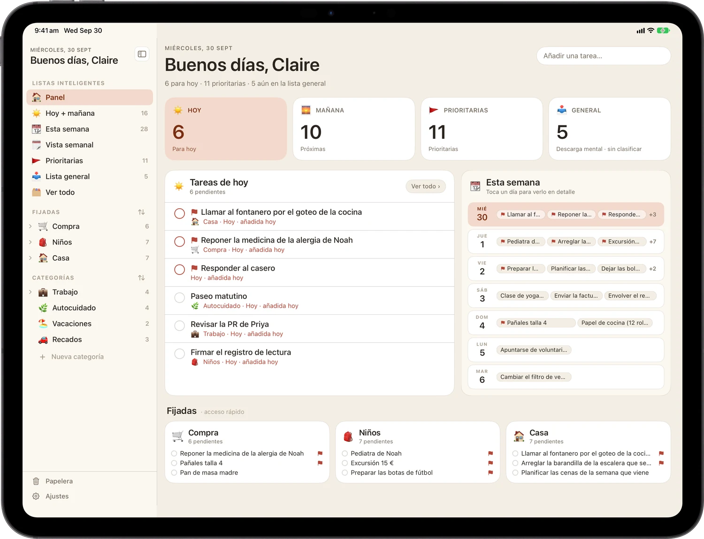
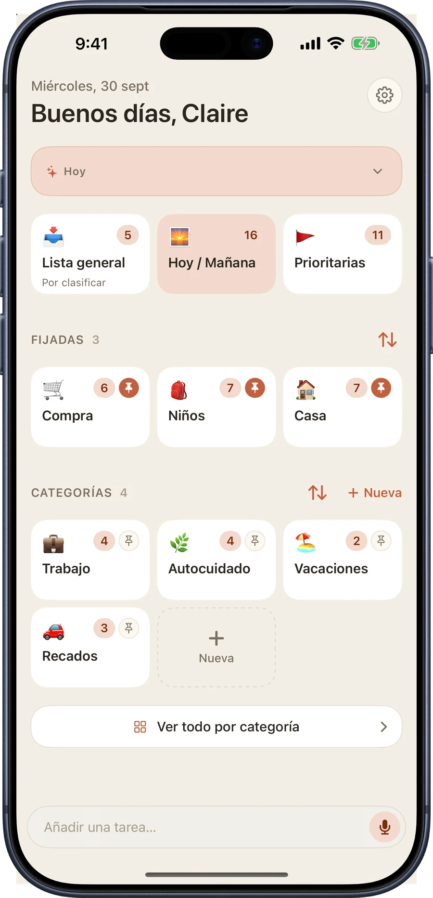
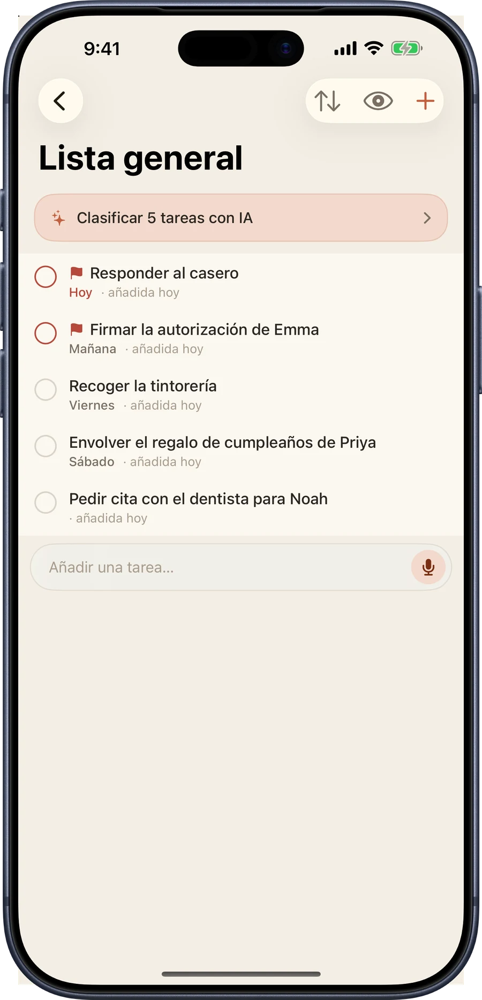
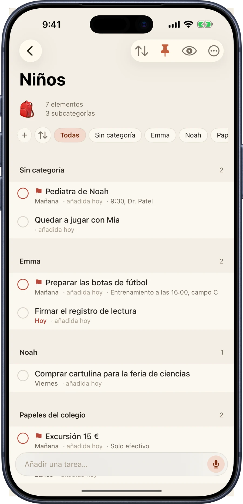
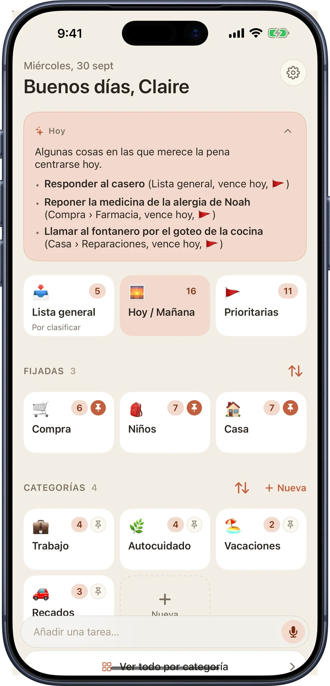
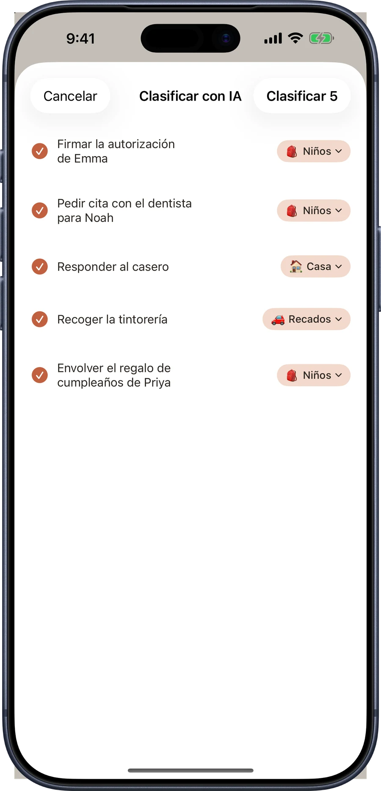
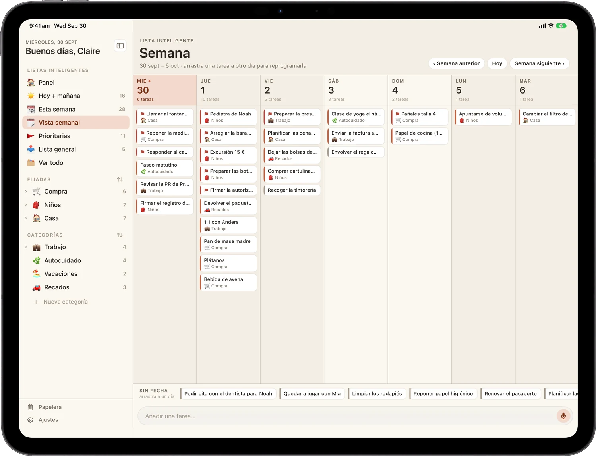
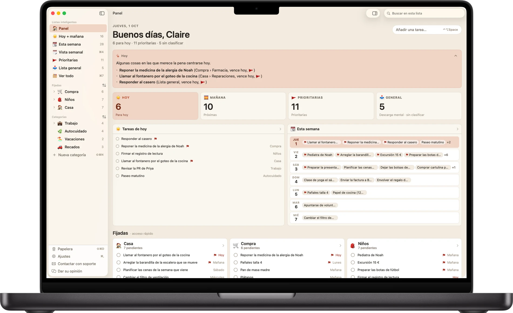

La lista que sigue el ritmo de todo lo que llevas a cuestas.
Una app de tareas cálida y visual para quienes hacen malabares con el día a día. Anota lo que sea en cuanto se te ocurra y clasifícalo cuando quieras.
Gratis para descargar.
iPhone, iPad y Mac. Sin cuenta, sin registro.
Una lista, todas las pantallas


Anota
Vuelca todo ahora. Clasifica después.
La Lista general es tu bandeja de entrada. Escribe lo que sea en el segundo en que se te ocurra. Sin categoría, sin fecha, sin decisiones de antemano. Luego clasifícalo cuando quieras, quizá el domingo.
Anotar nunca te impide hacer. La barra de añadir está en cada pantalla, y Siri y Atajos también funcionan.

Organiza
Categorías, y habitaciones dentro de ellas.
Compra, Niños, Casa, Trabajo. Cada una tiene su propio emoji y su color. Fija las que más usas para que queden arriba.
Cuando una lista se llena, divídela en subcategorías: Emma, Noah, Papeles del colegio. Desliza para marcar lo importante, arrastra para reordenar y pon una fecha para que nada se escape.

Busy B Intelligence
Un poco de ayuda con el montón, todo en tu dispositivo.
Busy B Pro añade tres usos discretos de la inteligencia en el dispositivo, creados con Apple Intelligence. Cada uno se ejecuta en tu iPhone, iPad o Mac. Nada sobre tus tareas se envía a un servidor, ni al nuestro ni a otro, y nada de lo que pones en Busy B se usa para entrenar un modelo.
- Resumen del día: abre la app con una lectura breve de lo que de verdad importa hoy, sacada de tu propia lista
- Clasificación en un toque: ordena toda una Lista general en las categorías correctas con un solo toque, con un paso de revisión antes de que nada se mueva
- Repaso: un vistazo a las tareas que se quedan atascadas, cada una con una sugerencia para el siguiente paso


El resumen del día, la clasificación en un toque y el repaso requieren un dispositivo compatible con Apple Intelligence, con la función activada en Ajustes. Todo lo demás de Busy B funciona en todos los dispositivos compatibles.
Añádelo con la voz
Dilo y listo.
Busy B Pro pone un micrófono en la barra de añadir. Tócalo, di la tarea y se transcribe por completo en tu dispositivo. En un dispositivo compatible con Apple Intelligence, Busy B también rellena la fecha, la categoría y la prioridad antes de guardar.
¿Prefieres no abrir la app? Siri también funciona, gratis para todos con iOS 27 o posterior: «Oye Siri, añade recoger la tintorería mañana a Casa en Busy B».
En iPad
Una app de iPad de verdad, con tres paneles.
El Centro de mando es un diseño completo de tres paneles: listas inteligentes, tus tareas y los detalles al lado. La vista Semana muestra los siete días a la vez, y arrastras una tarea de un día a otro para reprogramarla.

En Mac
Una app nativa de Mac, con barra de menús y todo.
Una ventana de verdad con atajos de teclado de verdad (⌘1–⌘5) para saltar directamente a una lista inteligente. La misma barra lateral, las mismas tareas, la misma cuenta de iCloud que tu teléfono y tu iPad.

Qué incluye
Lo bastante sencilla para abrirla y empezar a escribir.
Lo bastante potente para organizar una vida ajetreada.
- Lista general: anota lo que sea, cuando sea, y clasifícalo cuando quieras
- Hoy y Mañana: mira justo lo que importa ahora
- Categorías: organiza a tu manera, desde el principio
- Subcategorías: anida y agrupa tareas dentro de una categoría
- Prioridad y clasificación: desliza para marcar lo importante o meterlo en una categoría
- Recordatorios de vencimiento: avisos amables para que nada se escape
- Tareas repetidas: las que vuelven cada semana
- Vista Semana: arrastra tareas entre días para reprogramarlas
- Centro de mando en iPad: un diseño de tres paneles pensado para iPad
- Sincronización con iCloud: tus tareas, en todas partes, automáticamente
- Nueve temas: paletas hechas a mano, cada una con modo oscuro
- Resumen del día: una lectura en el dispositivo de lo que importa hoy
- Clasificación en un toque: clasifica una bandeja entera en categorías con un toque
- Repaso: saca a la luz las tareas que se quedan atascadas
- App de Mac: una ventana nativa con su propia barra de menús y atajos de teclado
- Captura por voz: toca el micrófono, di la tarea y Busy B rellena el resto
- Siri: «añade una tarea a Busy B» funciona sin manos, gratis para todos
Las categorías ilimitadas, las subcategorías, toda la colección de temas, Busy B Intelligence y la captura por voz vienen con Busy B Pro, disponible dentro de la app. Siri sigue siendo gratis para todos.
Dónde funciona
La misma lista, en el dispositivo que tengas más a mano.
Añade en el teléfono, ordena en el iPad, repasa en el Mac. iCloud mantiene los tres al día sin que tengas que pensarlo.
iPhone
Mosaicos para el día, una bandeja general y añadir con un solo pulgar. iOS 18 o posterior.
Disponible ahoraiPad
El Centro de mando de tres paneles y la vista Semana. iPadOS 18 o posterior.
Disponible ahoraMac
Una ventana nativa, atajos de teclado de verdad, su propia barra de menús. macOS 15 o posterior, Apple silicon.
Disponible ahoraTu lista, tuya
Sin cuenta. Sin registro. Sin servidores nuestros.
Tus datos de tareas son tuyos, sincronizados de forma privada a través de tu propia cuenta de iCloud, directamente entre tus dispositivos. No hay nada que crear, nada donde iniciar sesión y ninguna copia de tu semana en un servidor nuestro, porque no tenemos ninguno.
Empieza con la lista de hoy.
Gratis en el App Store.
iPhone, iPad y Mac.
¿Preguntas, errores o una idea para la app? Escribe a support@busybplanner.com y te responde una persona, normalmente en uno o dos días. Las preguntas habituales ya tienen respuesta en la página de soporte.